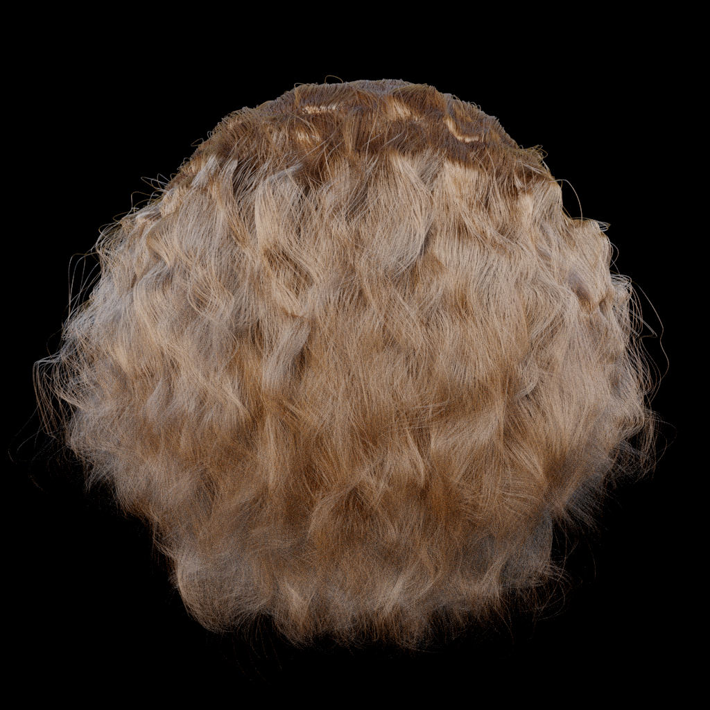
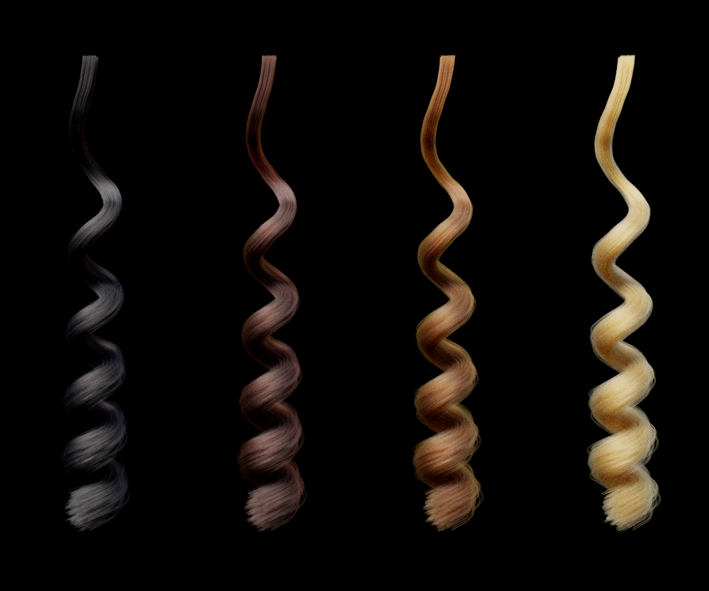

Rendering Realistic Human Hair
Jacob Lopez, Isaac Lee, Josh Pechner
Abstract
In this project, our goal was to realistically render hair using both the Kajiya Kay and Marschner models. For our Kajiya Kay model, we built a BSDF using the Mitsuba renderer. For our second model, which ended up using a modified version of the Marschner model, we used the Tungsten renderer. Ultimately, we were able to get some working hair renderings using both models, to varying degrees of success.
Technical Approach
Kajiya Kay Model
The Kajiya-Kay model represents the reflection of light off of hairs in not just one direction, but off a cone formed by rotating the tangent vector of the hair by the surface normal at the intersection of the ray and the hair.
Implementation of this incorporates a diffuse and specular component. The diffuse part is mathematically equivalent to the Blinn-Phong diffuse. Implementation used the equation:
The specular component differs from Blinn-Phong and is obtained by the equation:

We have t as the tangent vector to the hair cylinder, l as the vector to the light sounce, and e as the vector to the camera. Kd is the diffuse scalar component, Ks is the specular scalar component, and p is the exponent to the specular component.
Modified Marschner Model
The modified version of Marschner we use is a major upgrade from Kajiya Kay. However, the better rendering comes at a cost of a much more complicated rendering scheme. This is done in three main steps. First, the lobe, or type of reflection is calculated. Then, we sample the longitudal angle. After this we can sample the azimuthal angle. When this is all done, we can then use the calculated weights and samples to calculate the final outgoing vector and weight.
Lobe Selection
The first step in the process is to determine which lobe selection. In this paper, the lobe refers to which reflectance pattern the light follows off of the hair. There are three lobes that we used in our model: R, TT, and TRT. Each of these is referred to with a value p. For R we set p = 0, for TT we set p = 1, and for TRT we set p = 2. R, or reflection, refers to when the light reflects off of the outside surface of the hair. TT, or double transmission, refers to the hair passing through the first side of the hair fiber, through it, and out the other side. TRT, or transmission-reflection-transmission, refers to the light transmitting through the outside surface of the hair, reflecting off of the inside surface of the hair, and transmitting again to the outside of the hair.
To actually implement lobe selection, we first assume a smooth, perfectly specular hair fiber. We can calculate the attenuations through this fiber using the function below. To do so, we calculate the attenuations, Aspec(p,h) (using A(p,h) defined in the azimuthal section below) for each lobe p where h is a randomly sampled number in [-1, 1). Then, we weight the likelihood of choosing each lobe by its Aspec(p,h) relative to the others.
Importance Sampling the Azimuthal N Functions
To sample the azimuthal angle, we us the function φ. G is a standard gaussian random varible we sampled using the Box-Muller equation. We have h = 2ξh − 1, where ξh is a uniformly random sample from [0, 1), which as shown above represents the position at which the incoming vector hits the hair. vp,N is assigned a value based on the lobe selected. γi and γi are shown above, and are the angles of reflection inside and outside of the hair fiber.
The sample weight is A(p,h). μa is the absorbtion coefficient and μa' = μa / cos(θt).
F is defined as the Fresnel term, with θd as the difference angle between the in and out vectors. η is the index of refraction and η' is a modified η based on θd.

Below we have T, which is the absorbtion term.
The PDF for this sample is the below equation with A replaced with 1.

Importance Sampling the Longitudinal N function
To sample the longitudinal angle, we use the function θo(ξ1,ξ2,v,θcone) where ξ1,ξ2 are two uniform random numbers in [0, 1) and θ’ = π/2 − θcone. V is the variance our azimuthal calculations. We have θcone,R = −θi + 2α, θcone,TT = θi - a, θcone,TRT = −θi - 4α.
We use u(ξ1) to sample a spherical gaussian with variance 1.
Since this is perfect importance sampling, the weight is 1 and the PDF is Mcos2θo.
Problems Encountered
The first problem we encountered was finding a suitable renderer to implement the two of our hair reflectance models. We first explored the Mitsuba renderer because it was recommended by the course staff and it already handled hair intersection for raytracing. However Mitsuba wasn’t well documented and we had trouble finding a way to integrate our code for the Marschner model into the source code for Mitsuba. We moved on to the Tungsten renderer because it also had good existing code to handle hair intersection and it also had an implementation of a BCSDF similar to Marschner. We found this to be a good start from which to start writing our own BCSDF based on the few papers we decided to use (listed in the resources section). We ended up returning to Mitsuba to implement Kajiya Kay because we struggled for a while to integrate it into Tungsten. We could also reference some of the similar BSDFs that were implemented in Mitsuba to help us with our implementation of Kajiya Kay.
The Modified Marchner model was incredibly difficult to implement for many reasons. The papers we read often had a mathematical explanation for how the reflectance model should work, but nothing about implementation in the context of ray-tracing. We had to find a different paper that talked about how to implement a hair bcsdf with ray-tracing, but it differed in many ways from the Marchner model and related papers. On top of this, a lot of the papers directly contradicted each other in terms of the math, but we couldn’t just rely on one paper because each paper was ambiguous or incomplete in some way. To proceed with our own implementation, we had to piece together components of each of the papers and filled in the gaps with equations we derived ourselves.
The final struggle for the Modified Marschner model was implementing the final calculation of a sample’s weight. Tungsten represents the weight of a sample differently from the main paper we were following. The results of our own implementation of sample weighting were a lot more noisy with slightly different coloration, and it was extremely hard to debug this due to the poor documentation of Tungsten and because none of our reference papers calculated weight the same way as Tungsten required it.
The biggest challenge with implementing the Kajiya-Kay model was the lack of documentation for Mitsuba renderer. It is a large project with many files and components and we had to run many tests to even begin to understand what each component of the renderer represented. Though we were able to figure out a majority of what we needed through lots of trial and error, we ended up using a microfacet implementation for the specular component similar to the one used in project 3.2 using a Fresnel term, a Shadow-Masking term, and the normal distribution of function of the microfactet.
Lessons Learned
For the Marschner part, we learned that hair rendering models are nowhere near perfect and that there is still no single correct way to do it. The Marschner model can get quite tricky because there are so many ways to calculate each part of the BCSDF sample function, and it seems that each paper we found has a slightly different way of doing their calculations. Maybe one day there will be an agreed upon method, but we learned that today’s methods of rendering hair are very difficult to replicate with open source renderers.
In addition to getting experience with parsing and understanding open-source code created by others, the Kajiya-Kay part of the project helped in understanding some of the basic ideas and principles in hair rendering. We learned some earlier ideas of way that people represented the way that light interacts with hair (the Kajiya-Kay model) and we were able to see how this theory was improved upon by the Marchner model.
Results
Kajiya Kay
These were all rendered at 64 samples per pixel, with Kd = 0.4 and Ks = 0.6.

|

|

|


Modified Marschner Model
We were unable to correctly calculate the weight of our samples, resulting in discoloration of our final results. However, since Tungstens code was loosely based on the Marschner model, we were able to call Tungsten’s sample weighting function in our code. The following images are with our longitudinal sampling, azimuthal sampling, lobe selection, and longitudinal weighting.
|  | |
|  |
The following images our own sample weighting. These images were rendered using entirely our own BCSDF code. The colors are more vivid than the previous ones, but there's a lot more noise in the final images (red dots).
|
| |
|
| |
|
|
References
Renderers
Mitsuba Renderer: https://www.mitsuba-renderer.org
Tungsten Renderer: https://benedikt-bitterli.me/tungsten.html
Papers
Marschner, Light Scattering from Human Hair Fibers: http://www.graphics.stanford.edu/papers/hair/hair-sg03final.pdf
d’Eon et al., An Energy-Conserving Hair Reflectance Model: http://www.graphics.stanford.edu/papers/hair/hair-sg03final.pdf
Johannes Hanika, Importance Sampling for Physically-Based Hair Fiber Models: https://cg.ivd.kit.edu/publications/pubhanika/2013_hairbrief.pdf
Kajiya Kay, Rendering Fur with Three Dimensional Textures: https://cg.ivd.kit.edu/publications/pubhanika/2013_hairbrief.pdf
Contributions
Jacob
Jacob worked on researching renderers, coding our initial attempt at Kajiya Kay using Tungsten, worked on our Modified Marschner model on top of Tungsten, and contributed to each of the deliverables for the proposal, milestone, final presentation, and final report.
Josh
Josh worked on coding our initial attempt at Kajiya Kay using Tungsten, worked on our Modified Marschner model on top of Tungsten, and contributed to each of the deliverables for the proposal, milestone, final presentation, and final report.
Isaac
Isaac worked on on coding our initial attempt at Kajiya Kay using Tungsten, building, using, and understanding Mitsuba renderer, coded our second attempt at Kajiya Kay using Mitsuba, and contributed to each of the deliverables for the proposal, milestone, final presentation, final video, and final report.